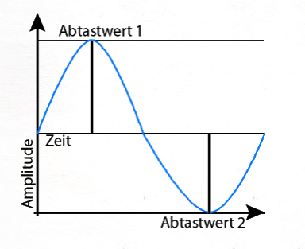

Nr.1 a)
import java.io.BufferedWriter; import java.io.File; import java.io.FileOutputStream; import java.io.FileWriter; import java.io.IOException; import java.io.OutputStreamWriter; import java.io.Writer; public class wave_io { public static void main(String[] args) { int samples=0; int validBits=0; long sampleRate=0; long numFrames=0; int numChannels=0; String inFilename = null; String outFilename = null; if (args.length < 1) { try { throw new WavFileException("At least one filename specified (" + args.length + ")"); } catch (WavFileException e1) { e1.printStackTrace(); } } // Samples in dem Array readWavFile.sound inFilename=args[0]; // Implementierung bei einem Eingabeparameter WavFile readWavFile = null; try { readWavFile = WavFile.read_wav(inFilename); // headerangaben numFrames = readWavFile.getNumFrames(); numChannels = readWavFile.getNumChannels(); samples = (int)numFrames*numChannels; validBits = readWavFile.getValidBits(); sampleRate = readWavFile.getSampleRate(); // 2a Samples schreiben for (int i=0; i < samples;i++) { } if (args.length == 1) System.exit(0); } catch (IOException e1) { // TODO Auto-generated catch block e1.printStackTrace(); } catch (WavFileException e1) { // TODO Auto-generated catch block e1.printStackTrace(); } // Implementierung bei Ein-und Ausgabeparameter outFilename=args[1]; try { // 2e Downsampling for (int i=0; i < samples;i++) { // ********* ToDo *************** } // 3b Bitreduzierung int reduced_bits = 1; for (int i=0; i < samples;i++) { // ********* ToDo *************** } // 3e Bitreduzierung Differenz reduced_bits = 1; for (int i=0; i < samples;i++) { // ********* ToDo *************** } WavFile.write_wav(outFilename, numChannels, numFrames, validBits, sampleRate, readWavFile.sound); } catch (Exception e) { System.err.println(e); e.printStackTrace(); } } }
Musikaufnahme
Nr.1 b)
Bei CDs wird eine Abtastrate von 44,1 kHz benutzt. Diese ist ausreichend, um Audiosignale mit Frequenzen bis 22 kHz zu erfassen. Bei DVDs sind Abtastraten bis 96 und 192 kHz möglich. Durch die höheren Abtastraten können die notwendigen analogen Tiefpassfilter für das Antialiasing mit einem geringeren Gütefaktor arbeiten, was eine geringere Steilheit und damit weniger Verzerrungen bewirkt. Auch kann die Grenzfrequenz nach oben geschoben werden, sodass Audiosignale mit entsprechend höheren Frequenzen sauber übertragen werden.
c)
Wieviele Kanäle nutzt das Audiosignal. 1 bei mono, 2 bei Stereo, 5 bei Dolby Surround
Ein Frame besteht aus 588 Stereo-Samples. Eine Sekunde Audio besteht aus 75 Frames. Dies ergibt sich aus der Berechnung 75 x 588 = 44.100. Da die Samplerate des CD-Formats 44.100 Hz (Samples pro Sekunde) beträgt, entspricht dieser Wert einer Sekunde Audio.
Die Abtastrate oder Abtastfrequenz, auch Samplingrate, Samplerate oder Samplingfrequenz, ist in der Signalverarbeitung die Häufigkeit, mit der ein Analogsignal (auch zeitkontinuierliches Signal genannt) in einer vorgegebenen Zeit abgetastet (das heißt, gemessen und in ein zeitdiskretes Signal umgewandelt) wird.
Die Samplingtiefe, auch Bittiefe genannt, gibt die Anzahl der Bits an, die bei der Quantisierung eines analogen Signals pro Abtastwert (=Sample) verwendet werden. Sie bestimmt, in wie vielen Abstufungen die Amplitude repräsentiert werden kann. Die Samplingtiefe ist neben der Samplingrate der zweite Parameter, durch den der Digitalisierungsvorgang beschrieben wird.
Die Bitrate ist eine Datenübertragungsrate und bezeichnet die Ausgabemenge von Informationseinheiten bei digitalen Multimediaformaten im Verhältnis einer Datenmenge zu einer Zeit, typischerweise gemessen in Bit pro Sekunde, abgekürzt als Bit/s oder bps. Mit fortschreitender Technik sind je nach Themengebiet immer mehr Vielfache üblich, angefangen bei kbit/s oder kbps (1.000 Bit/s), weiter mit Mbit/s (1.000.000 Bit/s) und Gbit/s (1.000.000.000 Bit/s).
d)
Musikdatei:
D = 44100/5 = 8820 frames/s
Sprachdatei:
D = 16000/5 = 3200 frames/s
Nr.2 a)
for (int i=0; i < samples;i++) {
System.out.println(readWavFile.sound[i]);
}
Musikaufnahme
Frequenz ( Sinus_LO ) = ca. 3000
Die Formel f0 = 1/T0 dient zur Bestimmung der Frequenz einer Schwingung. Die Frequenz der Schwingung "f0" und die Periodendauer "T0" der abgetastetend Schwingung stehen in Verhältnis zueinander. f0=1/n*Ta : durch die Multiplikation der Anzahl der Abtastwerte pro Schwingung n und des Abstands zwischen zwei Abtastwerten Ta wird T0 ermittelt. Ta=1/fa ---------> f0=1/n*fa (Ableitung, da fa Abtastfrequenz) Teilt man die Anzahl der Abtastwerte durch die Anzahl der Schwingungen innerhalb einer Periode erhält man n.

Sin_HI:
13623
16069
9102
-3196
-13623
-16069
-9102
3196
13623
Frequenz ( Sinus_HI ) =6 kHz
Begründung: Samplerate beträgt 16000 kHz. Diese teilt man durch die Anzahl der Samples in einer Amplitude. In diesem Fall wären das 3 Samples. Also 1/(8 / 3) *16 = 6kHz

Sin_LO:
13623
16069
9102
-3196
-13623
-16069
-9102
3196
13623
Frequenz ( Sinus_LO ) =3 kHz
Begründung: Samplerate beträgt 16000 kHz. Diese teilt man durch die Anzahl der Samples in einer Amplitude. In diesem Fall wären das 3 Samples. Also 1/(16 / 3) *16 = 3kHz
Abtasttheorem: fa > 2x f0 max
Mathematische Vorschrift, die besagt, dass bei der Analog/Digital-Wandlung die Abtastfrequenz mehr als doppelt so hoch sein muss wie die höchste Frequenz des zu digitalisierenden analogen Signals. Die Abtastfrequenz eines Audiosignals muss demnach größer als 40 kHz, die Abtastfrequenz eines Videosignals in HD größer als 60 MHz und in SD größer als 10 MHz sein. Das Abtasttheorem wird auch Nyquist- oder Shannon-Theorem genannt.
Im ersten Fall XA1(ω) wird mit einer Abtastfrequenz gearbeitet, die deutlich größer ist als das Abtasttheorem vorschreibt. Dieser Fall wird als Oversampling bezeichnet. Durch die hohe Abtastfrequenz werden das Spektrum im Basisband und die nächsthöheren Spektren deutlich voneinander getrennt, sodass mit einem Tiefpass-Filter mit vergleichsweise flachem Übergang zwischen Sperr- und Durchlass-Bereich gearbeitet werden kann. Im zweiten Fall XA2(ω) wird das Abtasttheorem gerade eingehalten. Es zeigt sich aber, dass die Rekonstruktion nur mit einem idealen Tiefpass-Filter erfolgen kann, der technisch nicht realisiert werden kann. Dieser Fall entspricht dem theoretischen Grenzfall des Abtasttheorems. Im Fall einer zu kleinen Abtastfrequenz XA3(ω) überlagern sich die Spektren. Das Signal kann selbst mit einem idealen Tiefpass-Filter nicht fehlerfrei rekonstruiert werden. Es kommt zu Signalverzerrungen oder Aliasing.
Die Vorbehandlung nennt sich Aliasing
Beim Alias-Effekt werden Frequenzen, die oberhalb der halben Samplingfrequenz (auch Nyquist-Frequenz genannt) liegen, als niedrigere Frequenzen interpretiert, da eine vollständige Rekonstruktion des Ausgangssignals nicht möglich ist. Der Grund hierfür ist ein Verstoß gegen das Abtasttheorem, welches besagt, dass die Abtastrate mindestens doppelt so hoch sein muss, wie die höchste zu übertragende Frequenz.